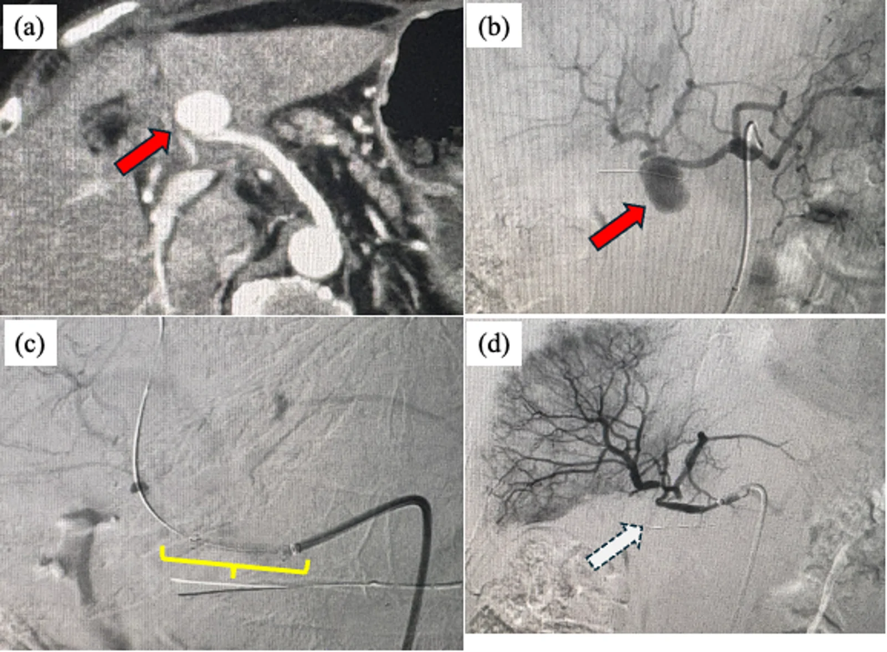
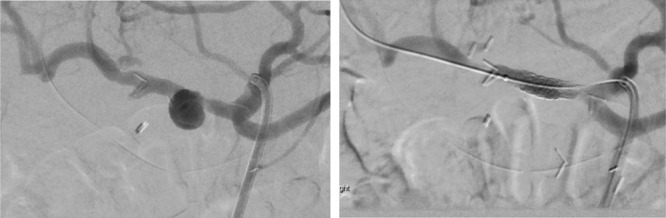

1942 — Chảy máu muộn sau cắt tụy–tá tràng (PPH): "sentinel bleed", giả phình và can thiệp nội mạch / Delayed postpancreatectomy hemorrhage
Tags: pattern:xuat-huyet-tieu-hoa pattern:gia-phinh pattern:sentinel-bleed pattern:ro-dong-mach vung:tuy vung:o-bung protocol:CTA protocol:DSA protocol:nut-mach score:ISGPS-PPH
Mức chắc chắn (certainty): tổng hợp y văn (literature synthesis) — số liệu lấy từ một phân tích gộp 15 nghiên cứu/248 ca PPH muộn (J Gastrointest Surg 2011), một đoàn hệ 616 ca mổ tụy với 25 ca chảy máu muộn (Indian J Gastroenterol 2023), một đoàn hệ 440 ca PD (Ann Surg Open 2021 — PMC10455063), một loạt 18 ca can thiệp nội mạch (2019 — PMC6966415), một loạt 750 ca mổ tụy/16 ca PPH nặng (BMC Surg 2026 — PMC13688979) và định nghĩa ISGPS 2007. Không có thử nghiệm ngẫu nhiên; các ngưỡng can thiệp là thực hành đồng thuận.
Câu chốt: chảy máu muộn sau cắt tụy–tá tràng là biến cố có báo trước nhưng hay bị bỏ qua — ba con số quyết định: (1) 45% ca chảy máu muộn có "sentinel bleed" (chảy máu nhỏ tự cầm 1–2 ngày trước khi vỡ ồ ạt), và 62% có kèm rò tụy/áp-xe — tức là giả phình hình thành trong ổ nhiễm (J Gastrointest Surg 2011); (2) khi đã vỡ, can thiệp nội mạch giảm tử vong còn 22% so với 47% nếu mổ (p = 0,02), dù tỷ lệ cầm máu hoàn toàn tương đương (80% vs 76%); (3) CTA có thể âm: chỉ 9% (6/39) ca có thoát cản quang trên CTA, nên CTA âm không loại trừ và bệnh nhân còn chảy máu phải chụp DSA (PMC10455063).
1. Tổng quan bệnh học – cơ chế hình ảnh (TẠI SAO)
1.1 Cơ chế: dịch tụy "ăn" thành mạch, không phải một mạch máu tự vỡ
- Sau cắt tụy–tá tràng (PD), động mạch vị–tá tràng (GDA) được thắt sát gốc, để lại một mỏm cụt ngắn nằm ngay cạnh miệng nối tụy–ruột. Mỏm này không có nhu mô che phủ và nằm trong vùng mà dịch tụy giàu enzyme có thể thoát ra nếu có rò tụy sau mổ (POPF).
- Hai yếu tố cùng lúc: enzyme tiêu protein (trypsin, chymotrypsin, elastase) phá hủy lớp áo ngoài và cơ trơn thành mạch; nhiễm khuẩn trong ổ dịch làm viêm quanh mạch. Thành mạch mất dần → phình giả (pseudoaneurysm) — một túi máu được bao bởi mô xơ/viêm, không có 3 lớp thành mạch.
- Giả phình không co thắt, không tự cầm như mạch lành: khi vỡ, máu chảy vào khoang phúc mạc (chảy máu ngoài lòng ruột) hoặc vào lòng ruột qua miệng nối (chảy máu trong lòng ruột). Đây là lý do PPH muộn ồ ạt và tái phát nếu chỉ truyền máu.
- "Sentinel bleed" là đợt chảy máu nhỏ (máu ở dẫn lưu, nôn máu, đi cầu phân đen) vài giờ–vài ngày trước đợt vỡ lớn; máu đông tạm bít lỗ rò, sau đó cục máu bị tiêu/trôi → vỡ lại. Vì vậy sentinel bleed là một dấu hiệu CĐHA-cấp cứu, không phải "chảy máu nhẹ đã ổn".
1.2 TẠI SAO nhìn thấy trên CTA/DSA — và tại sao có thể KHÔNG thấy
- Giả phình trên CTA: lòng túi chứa máu cùng đậm độ với động mạch ở thì động mạch (thuốc cản quang iod ~300–500 HU), không có thành mạch thật nên bờ có thể không đều và không thắt dần như mạch lành; nếu một phần túi đã huyết khối thì có dấu "yin–yang" (phần ngấm thuốc cạnh phần không ngấm 40–70 HU). Vị trí điển hình: mỏm GDA, dọc động mạch gan chung/gan riêng, hoặc động mạch gan phải thay thế.
- Thoát cản quang (extravasation) chỉ thấy khi máu đang chảy chủ động tại thời điểm chụp — đây là lý do độ nhạy thấp: trong 440 ca PD, chỉ 6/39 (9%) ca CTA có thoát cản quang, dù sau đó 26 ca phải can thiệp. CTA vẫn có giá trị lớn vì thấy giả phình, ổ dịch quanh mỏm tụy, thiếu máu tạng, khí trong ổ.
- DSA là khảo sát động — thấy rõ túi giả phình, nhánh nuôi, và cho phép can thiệp ngay trong cùng một lần chụp. Vì vậy ở bệnh nhân còn chảy máu dù CTA âm, bước tiếp theo là DSA, không phải "theo dõi thêm".
- Vật lý của "không thấy gì": máu trong lòng ruột hoặc trong ổ dịch có đậm độ 30–60 HU, không khác dịch tiêu hóa; một cục máu đông trong lòng túi giả phình có thể che mất lòng túi trên thì động mạch. Do đó âm tính trên một lần chụp không có giá trị loại trừ.
1.3 Ngưỡng định lượng dùng ngay (ISGPS 2007 + các đoàn hệ)
- ISGPS phân loại theo 3 trục: khởi phát (sớm ≤ 24 giờ / muộn > 24 giờ), vị trí (trong lòng ruột / ngoài lòng ruột), mức độ (nhẹ / nặng) → độ A, B, C:
- A: nhẹ, không cần can thiệp (truyền dịch, theo dõi).
- B: sớm nhưng nặng, hoặc muộn nhưng nhẹ; cần truyền máu/nội soi/nút mạch, chưa suy tạng.
- C: muộn và nặng, đe dọa tính mạng, cần can thiệp lớn (nút mạch/stent hoặc mổ lại), thường phải hồi sức tích cực.
- Tần suất: PPH nói chung 3–10%; PPH muộn 3,3% (phân tích gộp 248 ca); PPH nặng cần can thiệp cấp cứu 2,1% (16/750 ca; 2,7% sau PD, 0,9% sau cắt thân–đuôi); trong một đoàn hệ 440 PD, 15% có chảy máu theo định nghĩa rộng (gồm cả chảy máu nhẹ).
- Thời điểm: trung vị 5 ngày sau mổ (IQR 2–14), 78% là muộn > 24 giờ; 45% biểu hiện bằng máu trong dẫn lưu, 28% nôn máu/phân đen.
- Tử vong: 22% (nội mạch) vs 47% (mổ) trong PPH muộn; 12% vs 3% tử vong 90 ngày ở nhóm có/không PPH trong đoàn hệ 440 ca.
2. Mẫu hình + chẩn đoán phân biệt theo vị trí (gamut)
Mẫu hình chính: bệnh nhân 5–14 ngày sau PD, có POPF hoặc ổ dịch, đột ngột máu ở dẫn lưu hoặc nôn máu/phân đen, kèm nhịp tim nhanh và Hb tụt — có thể chỉ là "sentinel bleed" nhỏ.
Gamut theo vị trí nguồn chảy:
| Vị trí nguồn | Thực thể | Vì sao phải nghĩ tới |
|---|---|---|
| Mỏm GDA | Giả phình mỏm GDA | Vị trí số 1; mỏm cụt ngắn cạnh miệng nối, dễ bị dịch tụy ăn mòn |
| Động mạch gan | Giả phình CHA/PHA, động mạch gan phải thay thế | Chảy máu ồ ạt; nút mạch có nguy cơ thiếu máu gan |
| Nhánh SMA/gan thay thế | Giả phình nhánh, chảy máu vào quai ruột | Dễ bỏ sót trên CTA nếu không chụp thì ĐM muộn |
| Miệng nối | Loét/chảy máu miệng nối PJ–GJ, mạch máu bờ cắt | Nội soi thấy nhưng không được cầm máu mù nếu nghi giả phình |
| Đường mật | Hemobilia (giả phình gan → đường mật) | Tam chứng đau–vàng da–máu trong ống dẫn lưu mật |
| Tĩnh mạch cửa/lách | Tăng áp cửa do huyết khối TM lách sau mổ | Chảy máu ít, dai dẳng; khác hoàn toàn PPH động mạch |
- Phân biệt sống còn: PPH động mạch muộn → DSA + nút mạch/stent ngay; chảy máu sớm ≤ 24 giờ → thường do kỹ thuật mổ (mỏm tụy, mạch nhỏ) → mổ lại; loét miệng nối → nội soi can thiệp; tăng áp cửa → điều trị nguyên nhân, không nút mạch mù.
- Điểm nối: bệnh nhân có POPF grade B/C là nhóm nguy cơ cao nhất — 72% ca chảy máu muộn có CR-POPF, 52% có rò mật (Indian J Gastroenterol 2023). Ghi nhận "rò tụy đang điều trị" trong báo cáo CĐHA là red flag, không phải chi tiết phụ.

(a) CECT thì động mạch: túi giả phình ở mỏm động mạch vị–tá tràng (mũi tên đỏ); (b) chụp mạch xác nhận; (c) đặt stent-graft bắc qua cổ túi; (d) sau can thiệp, túi không còn ngấm thuốc. Nguồn: BMC Surg 2026 — PMC13688979, Fig. 1; giấy phép CC BY-NC-ND 4.0, ảnh nguyên bản không cắt/ghép.
3. Bảng so sánh phân biệt (ma trận đối chiếu)
| Thực thể (entity) | Hình ảnh điển hình (CTA / DSA) | Chốt vào (rule-in) | Chốt loại (rule-out) | Gợi ý xác nhận |
|---|---|---|---|---|
| Giả phình mỏm GDA/ĐM gan (PPH muộn) | Túi đồng đậm độ động mạch ở thì ĐM, bờ không đều, có thể "yin–yang"; DSA thấy rõ cổ túi | Máu ở dẫn lưu/nôn máu 5–14 ngày sau mổ + POPF + túi ngấm thuốc thì ĐM | Không có túi, không thoát cản quang, và không còn chảy máu → có thể theo dõi | DSA (± nút mạch/stent) khi còn nghi |
| Chảy máu sớm ≤ 24 giờ | Ổ dịch/máu quanh mỏm tụy; CTA thường không có giả phình | Tụt Hb ngay sau mổ + dẫn lưu ra máu tươi | Chảy máu xuất hiện sau nhiều ngày → không phải sớm | Mổ lại thăm dò |
| Loét miệng nối / chảy máu niêm mạc | Không có túi giả phình; nội soi thấy ổ loét/chảy máu rỉ | Nội soi thấy điểm chảy, không có mạch đập | Có túi giả phình cạnh miệng nối → không cầm máu qua nội soi mù | Nội soi có chuẩn bị can thiệp mạch |
| Hemobilia | Giả phình trong gan + máu trong đường mật; MRCP/ERCP thấy cục máu | Đau + vàng da + máu qua dẫn lưu mật | Không có máu trong đường mật → loại | ERCP/CT thì ĐM muộn |
| Tăng áp cửa do huyết khối TM lách | Lách to, tuần hoàn bàng hệ, khuyết thuốc TM lách, không túi giả phình | Chảy máu ít, dai dẳng + lách to + khuyết thuốc TM lách | Không có bàng hệ/không huyết khối → loại | CT thì cửa; Doppler |
| Rò động mạch–ruột (arterioenteric fistula) | Khí trong túi giả phình, mất liên tục thành ruột–mạch, máu trong ruột | Chảy máu tái phát nhiều đợt + khí trong ổ cạnh mạch | Không khí, không liên tục → ít nghĩ | DSA + CT; cân nhắc stent-graft phủ |
4. Protocol chụp + phân độ & thuật toán xử trí
- Bước 1 — nhận diện "sentinel bleed": bất kỳ máu ở dẫn lưu, nôn máu, phân đen, hoặc Hb tụt ≥ 2 g/dL trong 24 giờ sau PD → coi là PPH cho tới khi loại trừ. Không chờ "chảy máu nhiều".
- Bước 2 — CTA bụng 3 thì (không cản quang, thì ĐM mỏng ≤ 1 mm, thì TM cửa): tìm giả phình mỏm GDA/ĐM gan, thoát cản quang, ổ dịch quanh mỏm tụy, khí trong ổ, huyết khối TM lách. CTA âm không loại trừ nếu còn chảy máu.
- Bước 3 — DSA chọn lọc (thân tạng + SMA): xác định nhánh nuôi và can thiệp cùng lúc. Luôn chụp cả SMA vì động mạch gan phải thay thế xuất phát từ SMA.
- Bước 4 — chọn kỹ thuật can thiệp:
- Nút mạch (coil/liquid embolic) nếu có thể bảo tồn dòng gan — hiệu quả cao, tái phát thấp hơn.
- Stent-graft phủ khi tổn thương ở mỏm GDA quá ngắn hoặc động mạch gan chính — bảo tồn tưới máu gan nhưng nguy cơ tắc stent cao: 5/7 stent tắc, thời gian thông trung vị 10 ngày (IQR 8–22) trong đoàn hệ 440 ca; 30 ngày/1 năm tử vong 11%/25% trong loạt 18 ca.
- Nút mạch gan (sacrifice) khi không còn cách nào khác: cầm máu tốt hơn nút siêu chọn lọc (tái phát 39% chung; nút siêu chọn lọc tái phát 100% trong loạt nhỏ), nhưng biến chứng gan 56% (áp-xe/nhiễm trùng) — cần cân nhắc.
- Bước 5 — mổ lại khi: chảy máu sớm ≤ 24 giờ, bệnh nhân không đủ ổn định để chụp, can thiệp thất bại/tái phát, hoặc có biến chứng bụng cần mổ (hoại tử ruột, bục miệng nối).
Bảng ngưỡng & số liệu dùng trong quyết định:
| Thông số | Ngưỡng / giá trị | Ý nghĩa |
|---|---|---|
| Sentinel bleed | 45% PPH muộn; 50% vs 11,1% ở nhóm có/không giả phình | Dấu hiệu báo trước, phải chụp ngay |
| Thời điểm PPH | trung vị 5 ngày (2–14); 78% muộn | Khung thời gian để cảnh giác |
| CTA | 58% được chụp; 9% có thoát cản quang | Âm không loại trừ |
| Nút mạch | Cầm máu 94,1–100% (kỹ thuật/lâm sàng) | Điều trị đầu tay |
| Tử vong nội mạch vs mổ | 22% vs 47% (p = 0,02) | Ưu tiên nội mạch khi ổn định |
| Tắc stent gan | 5/7, trung vị 10 ngày | Cần theo dõi tưới máu gan |
| CR-POPF kèm PPH muộn | 72%; rò mật 52% | Ổ nhiễm là động lực |
| PPH nặng | 2,1% (16/750); PD 2,7% | Quy mô vấn đề |
flowchart TD
A[Máu dẫn lưu, nôn máu hoặc Hb tụt sau PD] --> B[Đánh giá huyết động + coi là PPH]
B --> C{Ổn định để chụp?}
C -->|Không| D[Mổ lại cấp cứu]
C -->|Có| E[CTA bụng 3 thì]
E --> F{Thấy giả phình hoặc thoát cản quang?}
F -->|Có| G[DSA + can thiệp: nút mạch hoặc stent-graft]
F -->|Không nhưng còn chảy máu| G
F -->|Không và đã cầm| H[Theo dõi sát 24-48 giờ, CTA lại nếu tái phát]
G --> I{Cầm máu?}
I -->|Có| J[Theo dõi tưới máu gan, Hb, nhiễm trùng]
I -->|Không hoặc tái phát| D
D --> K[Kiểm soát mỏm tụy, cầm máu trực tiếp, dẫn lưu]

DSA thì động mạch: túi giả phình 14 mm ở động mạch gan chung ngay trên mỏm GDA (trái); sau đặt stent-graft bóng nong 7 × 23 mm, túi không còn ngấm thuốc (phải). Nguồn: Ann Surg Open 2021 — PMC10455063, Fig. 1; giấy phép CC BY 4.0.
5. Biến thể bình thường và cạm bẫy
- "Sentinel bleed" bị bỏ qua là lỗi chết người phổ biến nhất: chảy máu nhỏ, tự cầm, Hb chỉ giảm nhẹ → hay được ghi "chảy máu dẫn lưu, theo dõi". 45% ca vỡ ồ ạt có tiền triệu này; chụp CTA/DSA ngay là cách duy nhất để cắt chuỗi.
- CTA âm không loại trừ: chỉ 9% ca có thoát cản quang; nếu bệnh nhân còn chảy máu, đi thẳng DSA. Ngược lại, đừng chụp CTA lặp lại nhiều lần ở người đang mất máu — mất thời gian.
- Nội soi cầm máu mù: nội soi có thể không tìm được điểm chảy (ca báo cáo: chảy máu từ giả phình ĐM gan phải sau cắt toàn bộ tụy, nội soi âm) và can thiệp qua nội soi vào vùng giả phình có thể làm bung cục máu, gây vỡ ồ ạt. Nội soi chỉ nên làm khi có kế hoạch can thiệp mạch song song.
- Bẫy "coil xong là xong": nút mạch siêu chọn lọc có thể tái phát do tuần hoàn bàng hệ (báo cáo tái phát 100% trong một loạt nhỏ 4 ca); phải chụp kiểm tra và theo dõi Hb, đau, sốt sau can thiệp.
- Bẫy stent-graft: stent bảo tồn dòng gan nhưng tắc sớm (5/7, trung vị 10 ngày) → nguy cơ áp-xe/hoại tử gan; cần theo dõi men gan, sốt, và hình ảnh tưới máu gan. Vai trò kháng kết tập tiểu cầu sau stent còn chưa rõ — không có khuyến cáo mạnh.
- Bẫy "chảy máu do chống đông": bệnh nhân sau mổ thường được dự phòng heparin; ngừng/đảo ngược chống đông không thay thế việc tìm giả phình. Ngược lại, đừng trì hoãn DSA để "chờ đông máu bình thường".
6. Tự lượng giá — Blind Quiz (bấm để hiện đáp án)
Ca 1 — Nam 67 tuổi, PD ngày thứ 9, POPF grade B đang dẫn lưu; đột ngột ra 200 mL máu tươi qua dẫn lưu, Hb 10,2 → 8,6 g/dL, mạch 112/phút, huyết áp ổn.
- Câu hỏi: (1) Đây là loại PPH nào theo ISGPS? (2) Hình ảnh (a) cho thấy gì và nằm ở đâu? (3) Bước tiếp theo và lựa chọn can thiệp?
Bấm để hiện đáp án (findings + chẩn đoán)
- Phân loại: chảy máu muộn (> 24 giờ), ngoài lòng ruột, mức nặng (Hb tụt 1,6 g/dL, mạch nhanh) → PPH độ B/C, cần can thiệp.
- Findings: (a) túi giả phình ở mỏm động mạch vị–tá tràng, ngấm thuốc đồng thì động mạch (mũi tên đỏ), nằm cạnh ổ dịch quanh mỏm tụy; (b)–(d) DSA xác nhận và đặt stent-graft, túi mất ngấm thuốc.
- Chẩn đoán: giả phình mỏm GDA trên nền POPF — cơ chế dịch tụy ăn mòn thành mạch.
- Xử trí: DSA + can thiệp ngay (nút mạch nếu bảo tồn được dòng gan; stent-graft nếu mỏm quá ngắn/ở ĐM gan chính); theo dõi tưới máu gan và nhiễm trùng ổ dịch.
- Nguồn ảnh: BMC Surg 2026, PMC13688979 Fig. 1 — CC BY-NC-ND 4.0 (nguyên bản, không cắt/ghép).
Ca 2 — Nam 62 tuổi, PD, ngày thứ 5 nôn 100 mL máu đỏ, sau đó tự cầm; nội soi dạ dày–tá tràng không thấy điểm chảy. CTA không có thoát cản quang.
- Câu hỏi: (1) Vì sao không được xuất viện/theo dõi ngoài? (2) CTA âm có loại trừ giả phình? (3) Bước tiếp theo?
Bấm để hiện đáp án
- Không được xuất viện: đây là sentinel bleed — 45% ca PPH muộn có tiền triệu này; đợt vỡ lớn thường đến trong vài giờ–vài ngày.
- CTA âm KHÔNG loại trừ: chỉ 9% (6/39) ca có thoát cản quang; giả phình có thể bị cục máu đông che lấp hoặc nhỏ hơn độ phân giải.
- Bước tiếp theo: DSA chọn lọc thân tạng + SMA (tìm động mạch gan phải thay thế); nếu thấy giả phình → nút mạch hoặc stent-graft; nếu không thấy và bệnh nhân ổn định → theo dõi sát + chụp lại khi có dấu hiệu mới.
- Nguồn ảnh: Ann Surg Open 2021, PMC10455063 Fig. 1 — CC BY 4.0.
Bài liên quan chéo
- 1981 – Hẹp miệng nối tụy–ruột sau Whipple
- 1941 – Suy tụy ngoại tiết sau mổ tụy (PERT)
- 1819 – Chảy máu tiêu hóa muộn do giả phình động mạch tạng
- 1912 – Phình động mạch tạng (lách/gan/thân tạng/SMA/tá tụy–tá tràng)
- 1683 – Hoại tử tụy nhiễm khuẩn & step-up
- 1840 – Huyết khối mảnh ghép tụy
Ảnh
images/1942_pph_CT-DSA_PMC13688979.webp— CECT + DSA, CC BY-NC-ND 4.0 (nguyên bản).images/1942_pph_DSA_PMC10455063.jpg— DSA + stent-graft, CC BY 4.0.- Nguồn + giấy phép từng ảnh:
images/CREDITS.md. Không tạo ảnh ghép vì một ảnh là CC BY-NC-ND.
Không dùng để chẩn đoán độc lập khi chưa có người hướng dẫn.